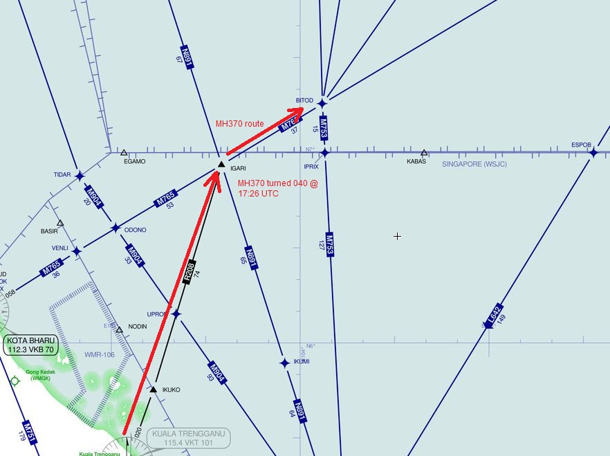
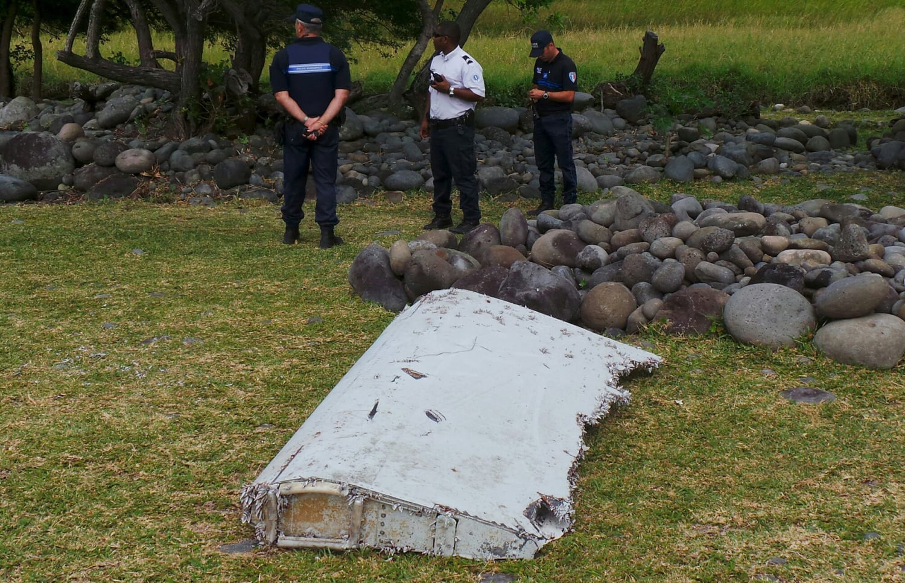

Flight MH370
Indian Ocean — March 2014
The Event
On March 8, 2014, a Boeing 777 disappeared from civilian radar during a flight from Kuala Lumpur to Beijing. Military radar tracked the aircraft as it made a sharp turn west, eventually flying into the vastness of the southern Indian Ocean. Despite years of intensive searching, the primary wreckage site remains a ghost.


Current Theories
The Archive presents the leading investigative assessments.
- Deliberate Pilot Action The complex maneuvers performed after the transponder was turned off suggest intentional control by someone with high-level flight skills.
- Hypoxia / Technical Failure A sudden cabin depressurization or electrical fire could have incapacitated the crew, turning the plane into a 'Ghost Flight' until it ran out of fuel.